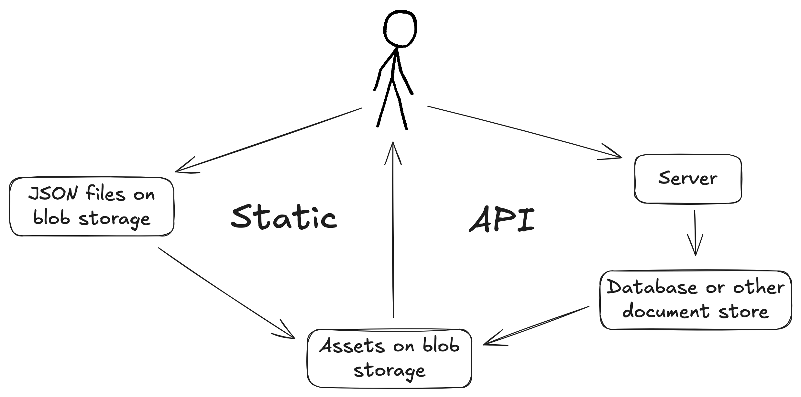
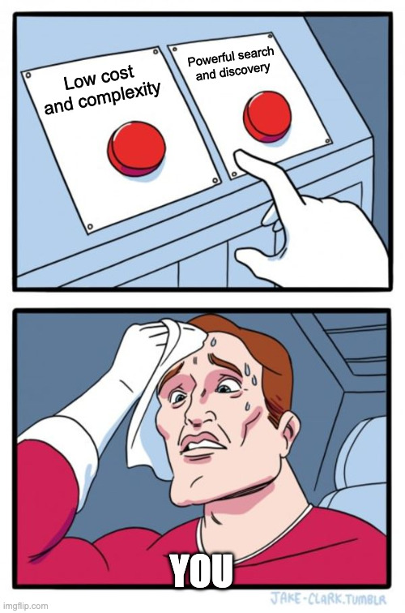
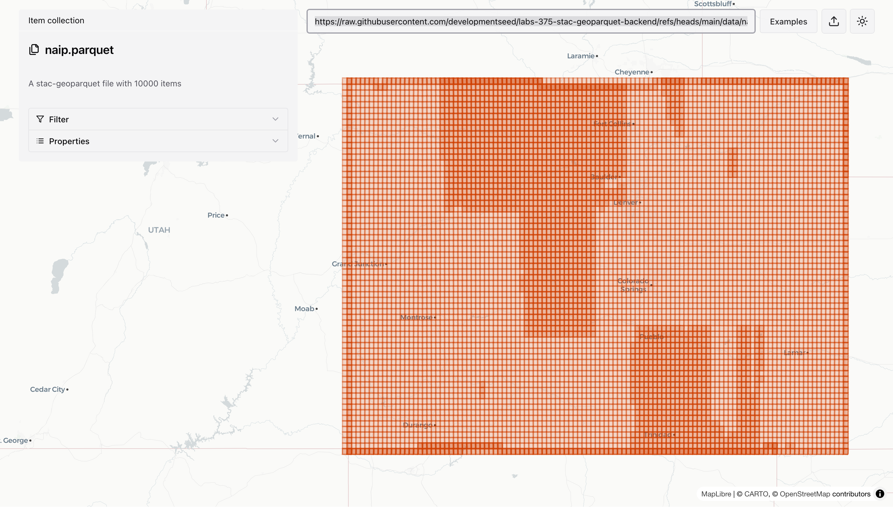
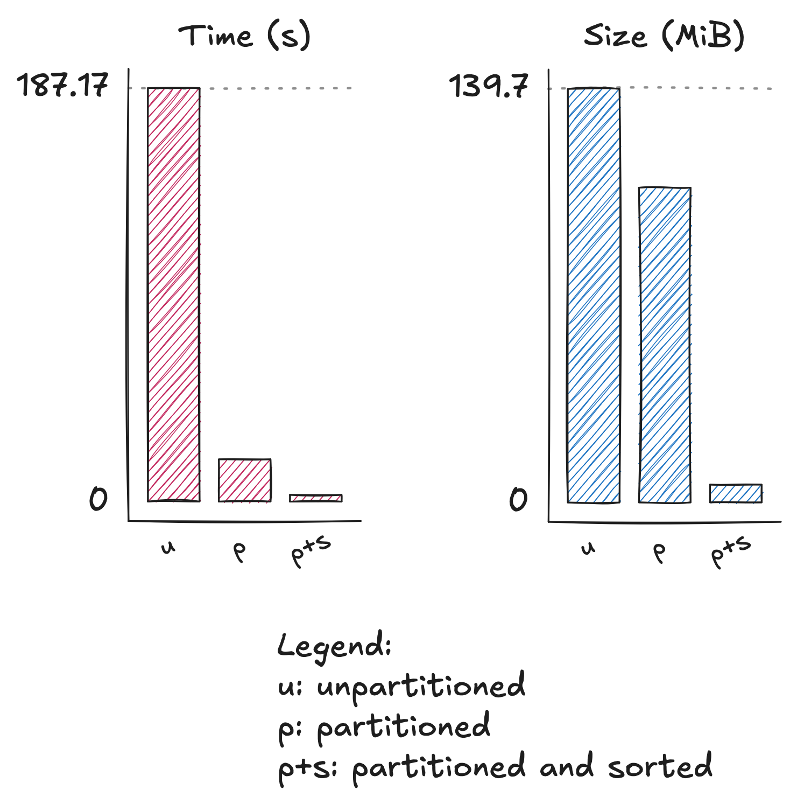
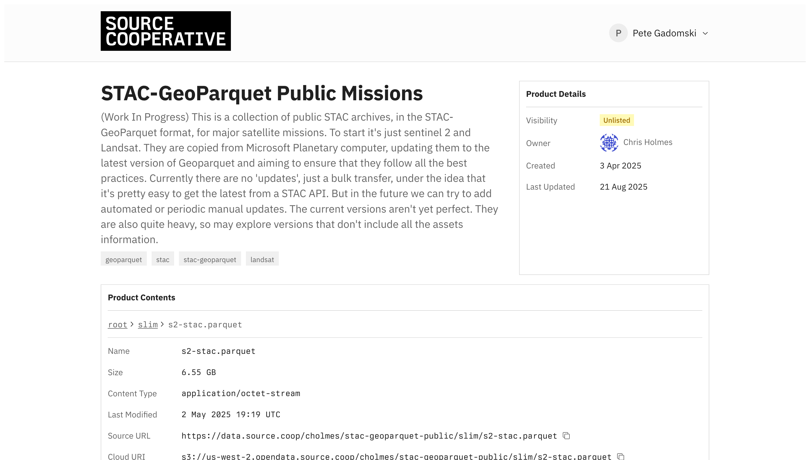
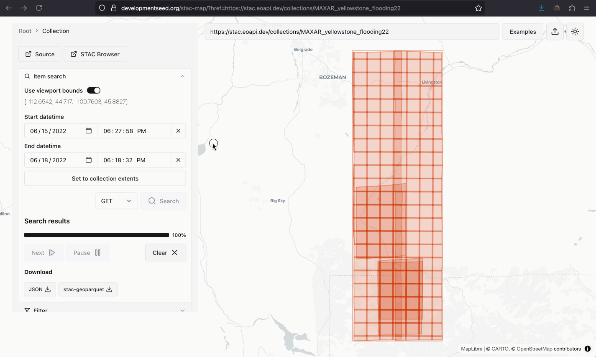
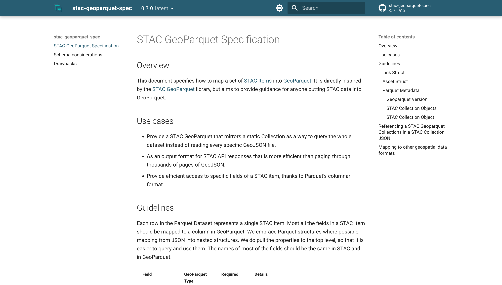

Cloud-Native Geospatial Metadata with stac-geoparquet
a.k.a. "Pragmatic STAC"
Pete Gadomski
A brief STAC history
---
config:
theme: neutral
look: handdrawn
---
timeline
2017 : Initial commit to what became the stac-spec repository
: Sprint 1 (Boulder)
: v0.1.0
2018 : Name changed to STAC
: Sprints 2 (Ft. Collins) and 3 (Menlo Park)
: v0.4.0 to v0.6.0
2019 : Sprint 4 and 5 (Arlington)
: v0.7.0 to v0.8.0
2020 : Sprint 6 (Virtual)
: v0.9.0
2021 : v1.0.0
2023 : Sprint 7 (Philadelphia)
: API v1.0.0
2024 : v1.1.0
2025 : Sprint 8 (Italy)
: OGC Community Standard
Cribbed heavily from https://element84.com/geospatial/stac-a-retrospective-part-1/
Why did STAC work?

For more, see https://element84.com/software-engineering/stac-a-retrospective-part-2-why-stac-was-successful/
What the STAC?

STAC is the map to your data.
— Howard Butler
STAC entities

Modes of STAC

Uses of STAC

These are very much Pete's opinions, based on his experience. Your mileage will almost certainly vary.
Uses of STAC: search
I need all Landsat images with cloud cover less than 20% over Summit County, Colorado in 2025 for a snow distribution research project
| Mode | Explanation | Rating |
|---|---|---|
| Static | The user must read every JSON blob and compare it to the search criteria | ❌ |
| API | Databases and other data stores usually have indexes on commonly-searched properties, including datetime and geometry | ✅ |
Uses of STAC: full scan
I need every NAIP image to train a model.
| Mode | Explanation | Rating |
|---|---|---|
| Static | The user must read every JSON blob, but blob storage is pretty good at this. | ⚠️ |
| API | Paging through API calls takes a lot of time, and full scans often get throttled or otherwise error. | ⚠️ |
Uses of STAC: ingest
I need to update my data store each day with a new analytic product
| Mode | Explanation | Rating |
|---|---|---|
| Static | Adding a new JSON file to blob storage is trivially easy, as is updating its parent collection | ✅ |
| API | Ingestion pipelines into databases or other document stores are often bespoke and complex | ⚠️ |
Uses of STAC: near real-time
I need to be notified as soon as a new weather forecast is available, so I can update my market model
| Mode | Explanation | Rating |
|---|---|---|
| Static | Many cloud providers provide easy-to-use notification systems that fire when new assets land in blob storage | ⚠️ |
| API | Most open-source API implementations do not come with a notification system out-of-the-box | ❌ |
Modes and uses
| Use | Static | API |
|---|---|---|
| Search | ❌ | ✅ |
| Full scan | ⚠️ | ⚠️ |
| Ingest | ✅ | ⚠️ |
| Near realtime | ⚠️ | ❌ |
| Cost and complexity | ✅ | ⚠️ |

Cloud-native geospatial metadata


stac-geoparquet specification

Data are useful at rest

$ rustac search \
https://raw.githubusercontent.com/developmentseed/labs-375-stac-geoparquet-backend/refs/heads/main/data/naip.parquet \
--intersects='{"type":"Point","coordinates":[-105.1019,40.1672]}'
No geospatial moats
D select max(datetime), min(datetime)
from 'https://raw.githubusercontent.com/developmentseed/'
'labs-375-stac-geoparquet-backend/refs/heads/main/'
'data/naip.parquet';
┌──────────────────────────┬──────────────────────────┐
│ max(datetime) │ min(datetime) │
│ timestamp with time zone │ timestamp with time zone │
├──────────────────────────┼──────────────────────────┤
│ 2022-08-27 10:00:00-06 │ 2019-09-18 18:00:00-06 │
└──────────────────────────┴──────────────────────────┘
Data are smaller

| Format | Size |
|---|---|
| json | 21 MB |
| json.gz | 614 kB |
| parquet | 488 kB |
| parquet (compressed) | 179 kB |
1000 sentinel-2 items
Major downside: inflexible schema
Workarounds:
- DuckDB's union_by_name
- The new variant type
- Just re-write it
Experiments
🧑🔬
stac-fastapi-geoparquet

https://github.com/developmentseed/labs-375-stac-geoparquet-backend/
stac-fastapi-geoparquet full-scan

stac-fastapi-geoparquet search

ITS_LIVE
Searching ten million items is reduced from 187s to 3s by partitioning and sorting
D select id from
read_parquet('s3://stac-fastapi-geoparquet-labs-375/its-live-partitioned-sorted/**/*.parquet')
where id = '2008-12-31T19:26:47Z-LE07_L1GT_116115_20081215_20200912_02_T2_X_LE07_L1GT_114115_20090118_20200912_02_T2_G0120V02_P097';

https://www.gadom.ski/posts/stac-geoparquet-organization/
https://stac-utils.github.io/rustac-py/latest/notebooks/its-live/
Large-scale on source.coop

More experimentation needed
- Sorting
- Asset structures
- Snapshots
- Transactions
- Embeddings
The rise of the machines
Large, statically hosted datasets that rich text descriptions can be quite useful when fed to a robot.

By https://eleven.com.au/futurama-characters.html, Fair use, Link
{kind=link}
Updated modes and uses
| Use | Static | API | stac-geoparquet |
|---|---|---|---|
| Search | ❌ | ✅ | ⚠️ |
| Full scan | ⚠️ | ⚠️ | ✅ |
| Ingest | ✅ | ⚠️ | ⚠️ |
| Near realtime | ⚠️ | ❌ | ⚠️ |
| Cost and complexity | ✅ | ⚠️ | ✅ |
| Maturity | ✅ | ✅ | ⚠️ |
Tooling
stac-map

stac-map

Software ecosystem

Next steps

Extract the spec

Complete spec move to https://github.com/radiantearth/stac-geoparquet-spec
More examples and documentation!
Release v1
⛵︎
Open questions around including an optional generic JSON blob in the recommended schema, how we handle assets, and more.
Head on over to the repo's issues to weigh in!
Fin
Thank you for your time